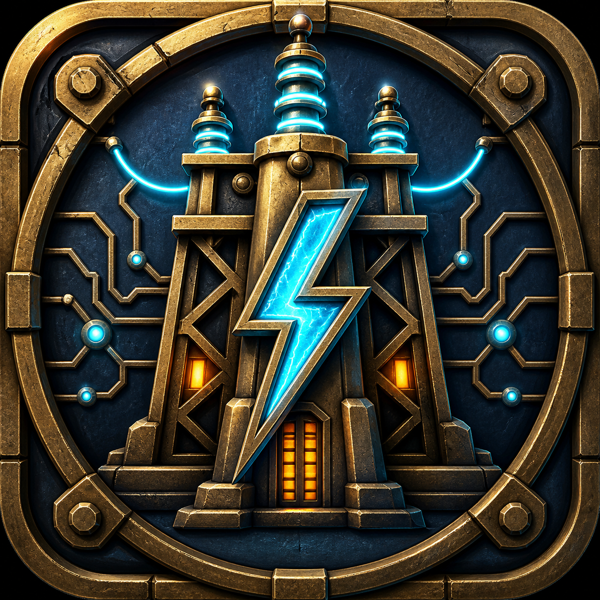

60개 고유 퍼즐
4×4에서 6×6으로 확장되는 다섯 도시 구역의 회로 퍼즐을 해결하세요.

황동 회로를 돌려 잠든 미니어처 항구를 복구하는 오프라인 퍼즐.
4×4에서 6×6으로 확장되는 다섯 도시 구역의 회로 퍼즐을 해결하세요.
정답뿐 아니라 적은 회전으로 복구하는 완성도까지 세 단계로 기록합니다.
계정이나 필수 서버 없이 진행과 설정을 기기에 안전하게 보관합니다.
Harbor Grid is available in Korean, English, Japanese, Spanish, and German. Rotate tactile city blocks, guide cyan power through brass routes, and watch every landmark glow.